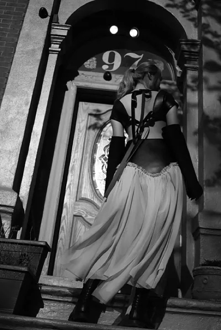
음악, 다른 세계로의 인도
음악은 인간을 다른 세계로 인도한다. 청각적 자극은 머릿속에 어떤 새로운 이미지가 그려주고, 나아가 가슴 깊숙한 곳에 열망이 차오르게 한다. 나에게는 특히 메탈 음악이 그렇다. 이와 같은 현상은 꽤나 오랜 시간동안 지속된다.
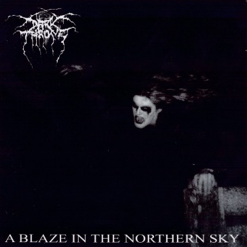
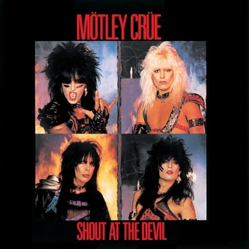
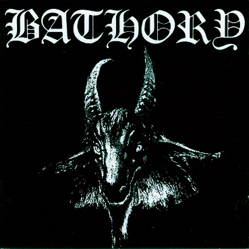
록스타가 되고 싶어!
단순히 멋지고 반항아 같은 면모에 빠져들었다. 친구들이 아이돌 그룹을 좋아할 때, 밴드들을 보며 멋지다고 생각했고, 록스타가 되고 싶다는 막연한 동경도 했었다. 솔직히 겉멋도 당연히 있었다.
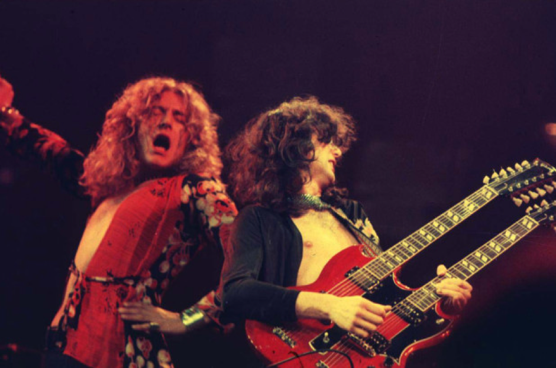
올 블랙 가죽 스타일링에, 긴 머리를 늘어뜨리고서, 노래를 부르거나 기타를 치는 록의 전형적인 이미지. 1980년대 글램/헤어메탈 신에서 많이 볼 수 있는 그 모습이 멋져 보였다. 어느 다른 아티스트보다 눈에 띄었고, 음악도 남다르게 다가왔다.
내가 처음 접한 록 서태지
처음 제대로 접한 록, 메탈 뮤지션은 ‘대장’, ‘문화 대통령' 서태지다. 실험적인 자세로 다양한 울림을 만들어내는, 가장 존경하는 국내 뮤지션이다.
긴 공백 기간 후 신보 발매 시 어떠한 음악을 선보일 지 전혀 예측을 못하게 만든다. 공백 기간이 매우 긴 나머지, 팬들은 우스갯소리로 정권이 바뀔 때 즈음 앨범을 낸다 고 하기도.
장르를 넘나들지만 기반은 록으로, 특히 6집 ‘울트라맨이야’ 에서는 그 정도가 강해져 매우 강렬한 메탈 사운드와 하드코어한 공연을 만들어냈다.
서태지의 화 Live 공연 영상 - thrash metal
“불타버려, 우린 쓰레기인 걸 너에겐 따뜻한 느낌이 없어 왜”
“꺼져버려, 넌 참 비겁한걸 다들 널 떠난 뒤 널 찾을래”
2000년 당시 라이브 공연 ‘태지의 화’ 영상을 보면 엄청난 에너지를 스크린 너머 전달받는다.
가슴이 뛰며 기분이 좋아진다. 누구든지 자신도 모르게 고개를 흔드는 스스로를 발견하게 될 것이다.
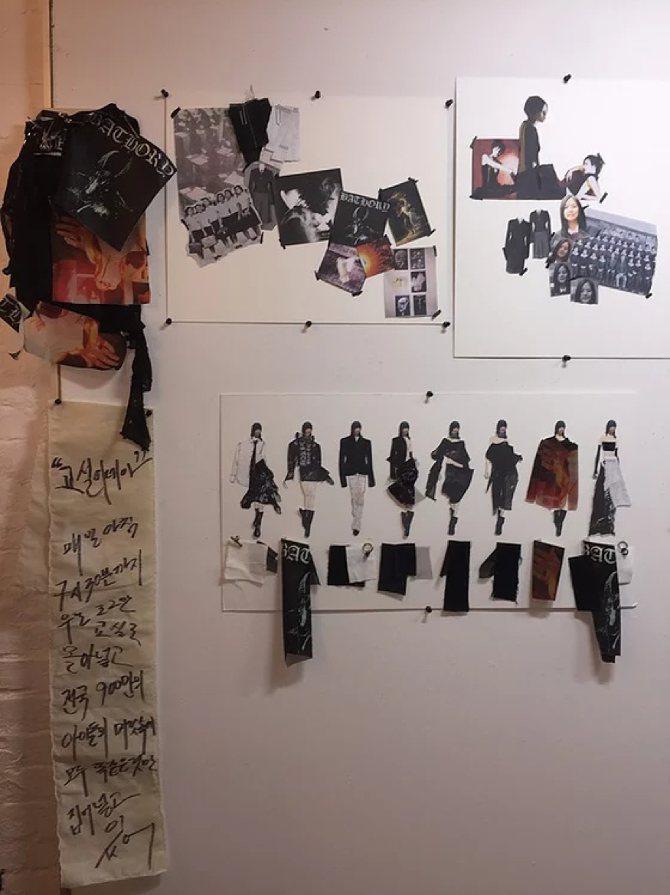
나의 록 연대기
처음 록을 접했을 때, 나는 중학생이었다. 그때 나에게 록은 돌파구나 마찬가지였다.
소극적이고 수동적이었던 나에게, 음악은 나의 이상향을 완벽히 재현해주는 존재였다. 내가 동경했던 강하고 적극적인 성격을 보여주었다. 크게 소리치지 못하는 나를 대변해주었다.
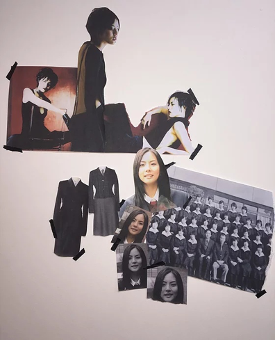
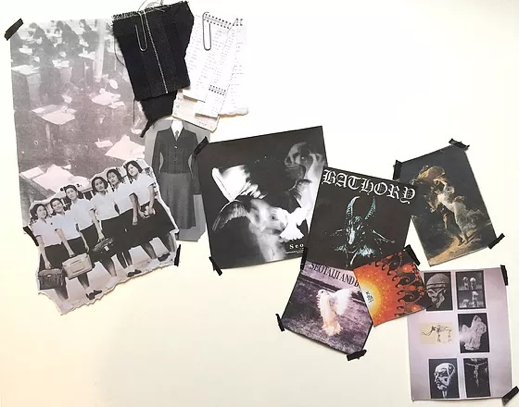
그러다 록의 강렬함이 나에게 흡수되었다. 귓등을 때리는 강렬한 기타소리, 거침 없는 보컬. 스트레스를 풀어주는 가슴 시원한 소리는 내가 지쳐 있거나 능률을 올리지 못하고 있을 때도 늘 곁에 함께 하며 나의 원동력이 되어주었다. 록은 나에게 자신감을 주었고, 어느새 나 또한 록을 따라 차츰 성격을 바꾸어 갔다.
Fashion & Music, Subcultures
록 밴드의 독특한 모습은 유난히 옷을 좋아하는 나의 관심사에 자연스레 스며들었고, 나는 서브컬쳐 관련 패션과 음악에 빠져들었다.
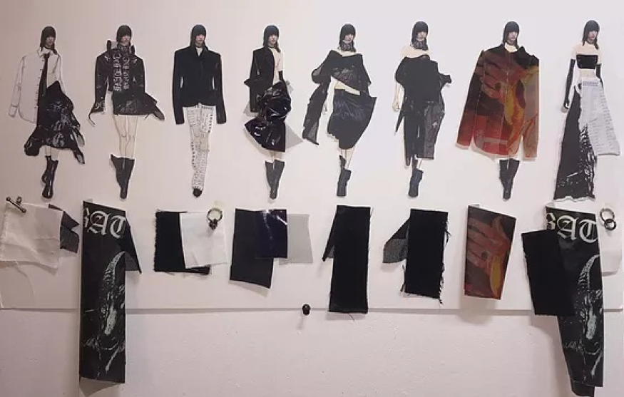
파고들수록 이 세계의 무한함을 느꼈다. 시대를 거슬러 올라가며 접하는 수많은 밴드들과 다양한 장르는 곧 나의 정신적 지주가 되었다.
나의 정체성을 확립해가는 데 도움을 주기도, 힘들 때 버팀목이 되어 주기도 한, 내 10대 시절의 친구가 되었다. 그만큼 많은 시간을 함께 했기에 당연한 결과였다.
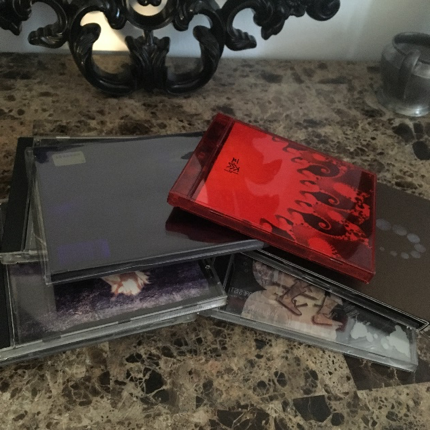
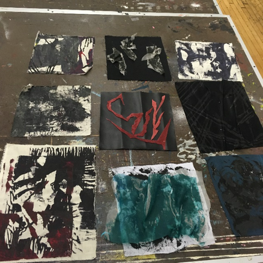
끝없는 에너지와 설렘, 원동력을 나만 느끼기엔 아깝다. 지치고 바쁜 일상 속, 록스타가 되고싶다는 과거의 동경을 생각하며 음악을 들으면 조금은 위로가 되고 가슴이 뜨거워진다.
록 연대기
이 장르는 특히나 세밀한 분류가 가능해서 수많은 하위 및 파생 장르들이 있다. 나열하면 끝도 없을 뿐더러, 경계가 없거나 여러 요소를 믹스한 경우도 많아 사실 큰 의미가 없다고 생각한다. 하지만 이해를 돕기 위해 시대순으로 간단히 언급을 해본다.
1960년대 중반 미국과 영국에서 히피 컬쳐와 함께 떠오른 사이키델릭 록; 한 번 쯤 들어봤을 우드스톡 록 페스티벌이 이 시대 중요한 이벤트라고 말할 수 있겠다.
몇 년 뒤인 1970년대가 되어 좀 더 무거운 사운드로 발전한 하드 록이 있다. 전자 기타와 베이스 기타, 드럼 및 키보드의 전형적인 밴드 구성 방식이 자리를 잡았고, 레드 제플린, 퀸, 딥 퍼플 등의 밴드는 이 시대를 대표한다.
*NWOBHM : New Wave of British Heavy Metal, 영국에서 시작된 음악 발전 운동
이와 더불어 *NWOBHM의 영향으로 헤비 메탈 음악도 동시대 및 1980년대에 인기가 높았다. 또한, 영국의 펑크 록 신 역시 1980년대를 대표한다. 1990년대는 얼터너티브 록과 그런지 록이 매우 인기였으며, 너바나와 펄 잼 등의 밴드가 있다.
데스 메탈과 블랙 메탈
헤비 메탈에서 파생되어 조금 더 극단적인 사운드를 지향하는 데스 메탈과 블랙 메탈이 있다.
*그로울링 : 으르렁거리는 소리를 내는 기법
이 두 장르의 일반적 특징은, 전자는 낮은 톤의 그로울링(으르렁거리는 소리를 내는 기법) 보컬과 빠른 속도의 기타 리프를 사용한다는 것이고 후자는 더욱 암울한 분위기를 내며 높은 톤의 기타 리프를 사용하는 경향이 있다.
물론 예외도 있으며 그 심지어 두 개를 결합한 ‘Blackened Death Metal’ 이라는 장르도 있다. 블랙 메탈에서 또 파생되는 앰비언트 및 인더스트리얼 블랙 메탈 등이 있다.
이렇듯 큰 범주 안에서 분위기, 기타 리프의 특징, 몇 음을 반복적으로 사용하는 트레몰로 주법의 유무 등의 요소를 통해 세분화로 갈라지는 장르들은 다양성을 제공한다.
혼돈, 파괴, 반항, 무질서, 해체, 상실, 위반
메탈 음악이 내게 전하는 무수한 단어들. 패션 디자인을 공부하며 항상 하던 고민들, 나를 향한 물음들.
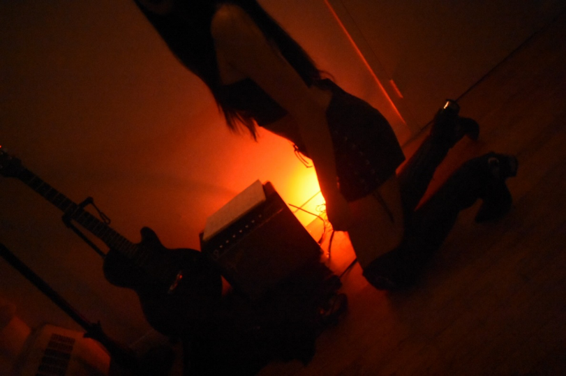
‘아름다움, 미란 무엇인가.’
‘과연 이상적인 미는 존재하는가.’
‘아름다움과 추악함, 그를 이분법적으로 정의할 수 있는가.’
‘오직 아름다움만을 추구하는 것이 옳은가.’
메탈로 묻고 메탈로 맺은 답, 세상은 마냥 아름답지 않다.
세상은 아름다운가?
세상은 마냥 아름답지 않다.
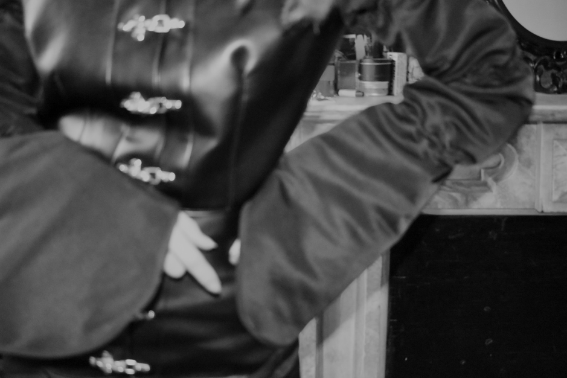
오직 아름다움만을 추구하는 것이 옳은가?
아름답지만은 않은 세상이기에 오직 아름다움만을 추구하는 것은 의미가 없다.
모든 것을 아름답게 포장해야 할 이유가 없다. 세상에 존재하는 부정적이기도 어둡기도 한 면모를 인정하고, 사람들에게 목소리 내어 알려야 한다.
메탈을 통해 질문하고, 스스로 내린 답이다. 나의 가치관이다. 일반적인 미의 개념을 전복시키며 우리가 ‘추악하다’고 여기는 것에서 미를 찾는 것. 그것이 바로 내가 해석한 메탈 음악의 정신이자, 나의 지향점이다..
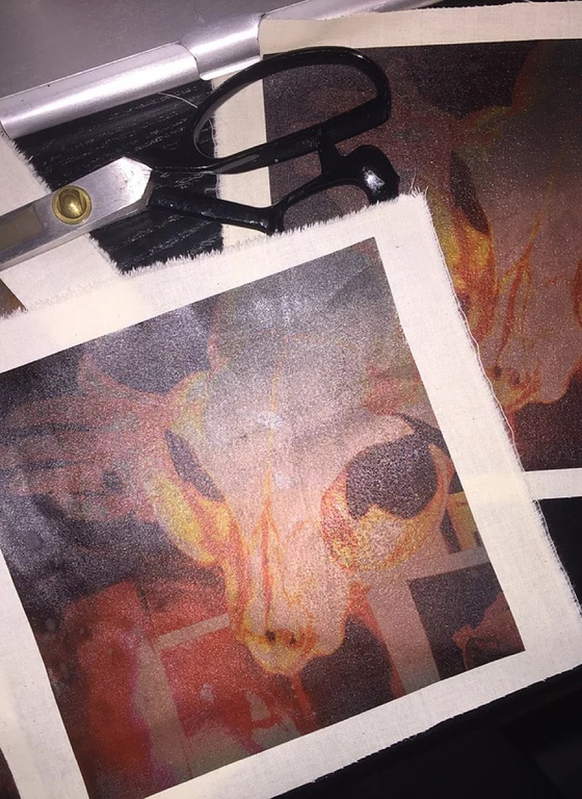
비로소 그 음악이 가진 메시지와 소음이 나의 이상이라 규정하게 되었다.Anti, 그 개념을 듣다
‘anti’의 정의가 담긴 그 음악. 아름다워 듣는 게 아니라, 그에 담긴 개념을 듣는다. 이 장르를 단순히 음악이라 정의하고 싶지 않다. 음악을 넘어, 깨달음을 전해주는, 철학이라고 정의하고 싶다. 이미 수많은 리스너들도 그렇게 생각하고 있을 거라 믿는다.
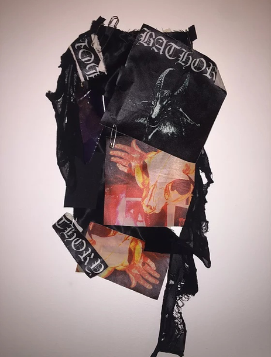
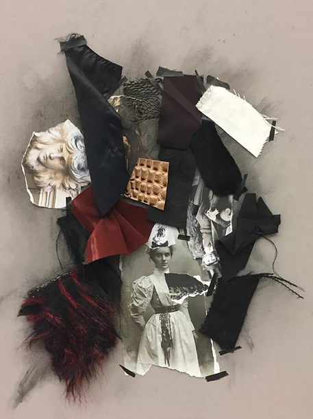
생소하더라도 시간을 가지고 듣다 보면, 그 안에 담긴 메시지를 함께 느낄 수 있을 거라고 생각한다. 아름답기 위해 노력하지 않는, 정제되지 않은 날 것의 느낌. 그를 통해 느껴지는 열정과 깊이.
노르웨이 블랙 메탈, Varg Vikernes
내가 메탈을 통해 느끼는 열정과 깊이를 노르웨이의 블랙 메탈을 예로 들어 소개하겠다. 참고로, 1990년대 초 노르웨이의 블랙 메탈 신은 이 장르에 지대한 영향을 끼쳤기에 유명하다.
1990년대 초반에 결성된 솔로 프로젝트 ‘Burzum’을 이끄는 Varg Vikernes는 블랙 메탈 및 다크 앰비언트 계에 빠질 수 없는 인물이다. (그에 대한 아주 잘 알려진 충격적인 일화가 있으며 영화로 제작되기도 했다)
그는 스튜디오 레코딩 시 악기와 스튜디오 레코딩 장비에 신경을 쓰지 않았다고 한다. 주변의 소음을 딱히 신경쓰지 않은 채 로우한 사운드로 초기 앨범을 20시간도 안되어 녹음을 마쳤다.
동료 드러머에게 빌린 드럼 세트, 어렸을 적 구매한 저렴한 기타를 사용해 노르웨이 블랙 메탈 전설의 앨범들을 만들어냈다. 1996년 작 ‘Filosofem’을 녹음할 당시에는 테크니션에게 제일 저급한 마이크를 달라고 따로 요청까지 했을 정도.
참고로 이 앨범은 내가 최고로 여기는 Burzum의 앨범이며, 노르웨이 블랙 메탈 및 Atmospheric metal 계열의 필청 앨범이다! ‘아주 깊은 지하 세계에서의 절규’ 라는 한 마디로 표현하고 싶다.
라이브
https://youtu.be/xbhCPt6PZIU
Led Zeppelin Live 공연 영상 - hard rock
3. https://youtu.be/f6C0vxAvJsA
(Mayhem Live 공연 영상 - Norwegian black metal)
라이브 공연을 가보지 않고는 이 장르를 논할 수 없다. 공연에 갈 때면 설렘이 배가 된다. 밴드 투어 날짜가 뜨면 바로 내가 사는 지역엔 언제 오는지 확인을 한다. 예매를 한 뒤 공연장에 들어서면 수많은 메탈 동지들을 만난다.
라이브 공연을 가보지 않고는 이 장르를 논할 수 없다. 공연에 갈 때면 설렘이 배가 된다.
밴드 투어 날짜가 뜨면 바로 내가 사는 지역엔 언제 오는지 확인을 한다. 예매를 한 뒤 공연장에 들어서면 수많은 메탈 동지들을 만난다.
가장 잊을 수 없는 공연은 2017년 로스 앤젤레스에서의 아이언 메이든 콘서트였다. 꽤나 많은 밴드의 투어에 참석했지만 손에 꼽는 공연으로, 관중들의 열기가 가장 뜨거웠다.
몇 만 평의 외딴 들판에 위치해 인터넷도 잘 터지지 않는 야외 공연장. 약 7만 명을 수용할 수 있는 곳으로 대규모 공연장이었다. 밤이 되자 스탠딩 필드는 역시나 mosh pit, 비유하자면 전투장이 되었다.
어디서 구해왔는지도 모를 드럼통과 장작에 불을 지피고 주위를 돌며 슬램을 하는 사람들, 컨테이너 박스에 올라가 점프를 하는 사람들… 모두가 한 마음으로 미쳤으며, 떼창을 하며 소리를 질렀다.
살아있음을 느낀다. 이 장소에 있다는 사실에 자부심을 느낀다. 밴드가 우리에게 주는 에너지는 단언컨대 직접 가보지 않고는 느낄 수 없다.
소망
1990년대에 태어난 나는 오래 전 그 시대를 살아보았으면 하는 소망이 있다.
1960년대 - 젊은이들의 낭만이 록 음악과 함께 꽃을 피웠던 시대.
1970년대 - 레드 제플린, 딥 퍼플, 블랙 사바스 등 전설적인 밴드들의 전성기이자 다시는 돌아오지 못할 시대.
1980년대 - 하드 록에 이어 헤비 메탈의 최고 전성기였으며, 글램 메탈과 함께 비주얼이 압도적이었던 시대.
모두 과거가 되어버린 시대라도 지금이나마 접할 수 있음에 감사하다. 불모지라고 여겨지는 장르이지만, 특히나 한국에서는 더더욱 그렇지만, 현재까지도 왕성한 활동을 하는 밴드들이 있고, 신생 밴드들도 꾸준히 있다
비주류, 마이너
그저 비주류 마이너 장르로 치부되며, 마냥 시끄럽고 어렵게만 여겨지는 사실이 팬으로서 조금 아쉽지만, 이 세계에 입문해서 조금 알다 보면 이 매력에 빠질 것임을 장담한다. 파도 파도 끝이 없을 것이다.
패션, 영화 등을 막론하고 여전히 예술적 및 문화적 영감이 되며, 수많은 음악의 ‘오리지널’ 격 존재인 이 록, 메탈 장르. 누군가에게는 너무나 감사하고 없어서는 안될 존재. 놓치고 살기엔 너무 아깝지 않은가.
(사진 출처 : /,https://www.stairwaytohades.com최지예)